Kappale 2 2020 (Fortis )
2.1 Solisluun murtumat
Valitse yksi:
- Luutumattomuusriski on 8-26%, mutta osa näistä on oireettomia
- Keskikolmanneksen murtumat ovat yleisimpiä
- Kaikki vastausvaihtoehdot ovat oikein
- Keskikolmanneksen murtumat hoidetaan yleensä konservatiivisesti
Solution.
ca: Luutumattomaksi jäänyt murtuma leikataan myöhemmin, jos siitä aiheutuu merkittävä subjektiivinen haitta. Luudutusleikkauksen ennuste on huonompi kuin tuoreen murtuman, koska alkuperäinen luutumattomuuteen johtanut syy on yleensä edelleen olemassa (esim. huono verenkierto tms.).
b: Solisluun murtumat luokitellaan useimmiten murtuman anatomisen sijainnin perusteella: Keskiosa (80%) > lateraaliosa (15-17%) > mediaaliosa (3-5%). Sivuilta luu on leveä, ja sen keskiosa on ohuin -> keskikolmanneksen murtuma yleisin.
d: Kantoside 2–3 viikkoa + heti raajan heiluriliikkeet. Vapaa mobilisaatio (nostot yli hartialinjan) vasta, kun on luutunut n. 6-8vk jälkeen. Operatiivinen harkinta, jos dislokaatio on yli solisluun paksuuden, eli luinen kontakti murtumakappaleiden välillä puuttuu, tai murtumassa on lyhentymää enemmän kuin 15–20 mm. Tietysti myös avomurtumat ja ne, joissa on hermo- tai verisuonivamma tai kelluva olkapää (solisluun ja lapaluun kaulan samanaikainen murtuma).
Lateraaliset murtumat leikataan herkemmin. Dislokoitumaton kons, mutta jos murtumaan liittyy korakoklavikulaaristen nivelsiteiden vamma, mediaalinen solisluun osa nousee ylös aiheuttaen AC-nivelen luksaation kaltaisen virheasennon -> Nämä potilaat kannattaa lähettää kirurgiseen yksikköön, jossa leikkausharkinta toteutetaan yksilöllisesti.
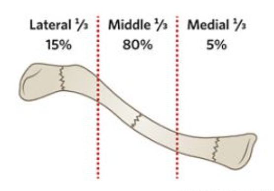2.2 Päivystyksessä (Kuusamon terveyskeskus) lähtisin hoitamaan kyseistä murtumaa ensin
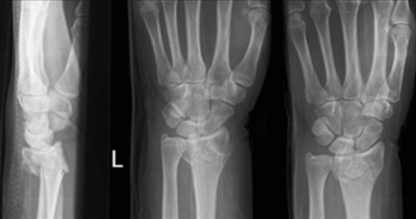
Valitse yksi:
- Repositiolla paikallis-puudutuksessa ja dorsaalisella kipsilastalla
- Kirjoittaisin lähetteen erikoissairaanhoitoon (OYS)
- Repositiolla ja kulmakipsillä
- Irroitettavalla rannelastalla
Solution.
a2.3 Minkälainen nilkkavamma?
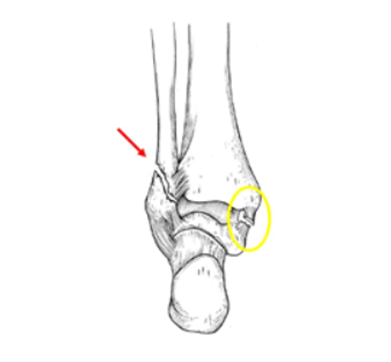
Valitse yksi:
- Weber B-tyypin lateraalimalleolin murtuma, ehyt syndesmoosin etulehti ja deltaligamentin repeämä
- Weber B-tyypin lateraalimalleolin murtuma ja FTA-ligamentin repeämä
- Weber A-tyypin lateraalimalleolin murtuma ja FTA-ligamentin repeämä
- Weber A-tyypin lateraalimalleolin murtuma ja deltaligamentin repeämä
Solution.
aWeber B = murtuma nivelraon tasolla (monissa lähteissä sanotaan syndesmoositasolla). Keltaisella ympyröity rakenne on deltaligamentti eli ligamentum collaterale mediale (koostuu useasta osasta). Jos ne ovat revenneet Weber B:n yhteydessä, on kyseessä instabiili murtuma, koska talus pääsee lateralisoitumaan. Jos tämä ei näy rtg-kuvasta sen ottohetkellä, niin tulee ottaa väännössä kuvat erikoissairaanhoidossa (yleensä tähän edettäisiin, kun todetaan mustelma mediaalisesti, mikä herättäisi epäilyn deltaligamenttivammasta). Instabiilin nilkkamurtuman hoito on operatiivinen.
c ja d: Weber A-murtuma olisi distaalisemmin ja fibulan murtumalinja nähtäisiin niveltason alapuolella. Weber A ei myöskään yleensä aiheuta tämän kaltaisia deltaligamenttirepeämiä, koska sen vammamekanismi on supinaatio-adduktio, jolloin se voi harvoin aiheuttaa mediaalimalleoliin vertikaalisen ja proksimaalisesti suuntautuvan murtuman. Weber A-murtumat ovat kuitenkin harvinaisia ja yleensä stabiileja (hoidetaan kons pääsääntöisesti).

2.4 Mikä seuraavista rakenteista on FTA?
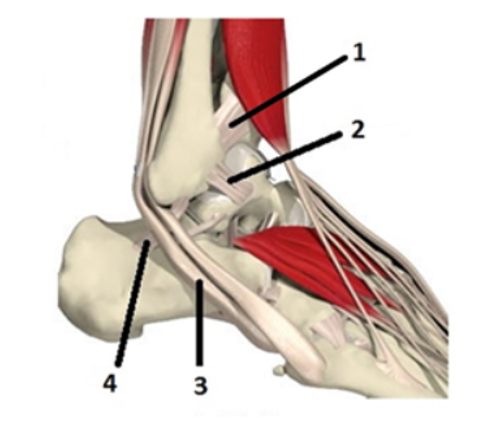
Valitse yksi:
- 2
- 4
- 1
- 3
Solution.
a1 = ligamentum tibiofibulare anterius (ATFL); osa syndesmoosia (Syndesmoosi viittaa distaaliseen tibiofibulaariseen niveleen, jota tukee 3-4 ligamenttia/ligamenttimaista kalvorakennetta: ligamentum tibiofibulare anterius (ATFL), ligamentum tibiofibulare posterius (PTFL), membrana interossea cruris (IOM) ja ligamentum tibiofibulare transversum (inferior transverse ligament of the tibiofibular syndesmosis), joka ei ole monissa anatomialähteissä)
3 = peroneus longuksen jänne
4 = lig. calcaneofibulare (FC-ligamentti)
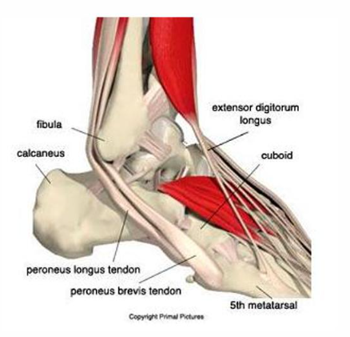2.5 Kuvassa näkyvä jalkaterän liike tulee pääasiallisesti
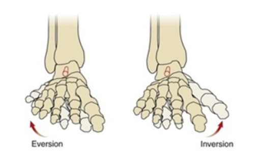
Valitse yksi:
- TC-nivelestä
- Lisfrancin nivelestä
- TMT nivelistä
- Subtalaarinivelestä
Solution.
da: TC-nivel eli talokruraalinivel (ylempi nilkkanivel) tuottaa pääasiassa plantaari- ja dorsifleksiota
b: Lisfrancin nivel eli tarsometatarsaalinivelet pääasiassa mahdollistavat pientä pronaatiota/supinaatiota jalkaterässä ja stabiloi kaaria kävellessä.
c: Lisfrancin nivel = TMT-nivelet eli vaaja- ja kuutioluut (cuneiforme-luut ja cuboideum) niveltyvät metatarsaaliluihin
d: Subtalaarinivel on yksi alemman nilkkanivelen osa. Alempi nilkkanivel koostuu anatomisesti kahdesta erillisestä nivelestä: art. subtalaris (taaempi) osa nivelestä ja art. talocalcaneonavicularis (etummainen) osa nivelestä
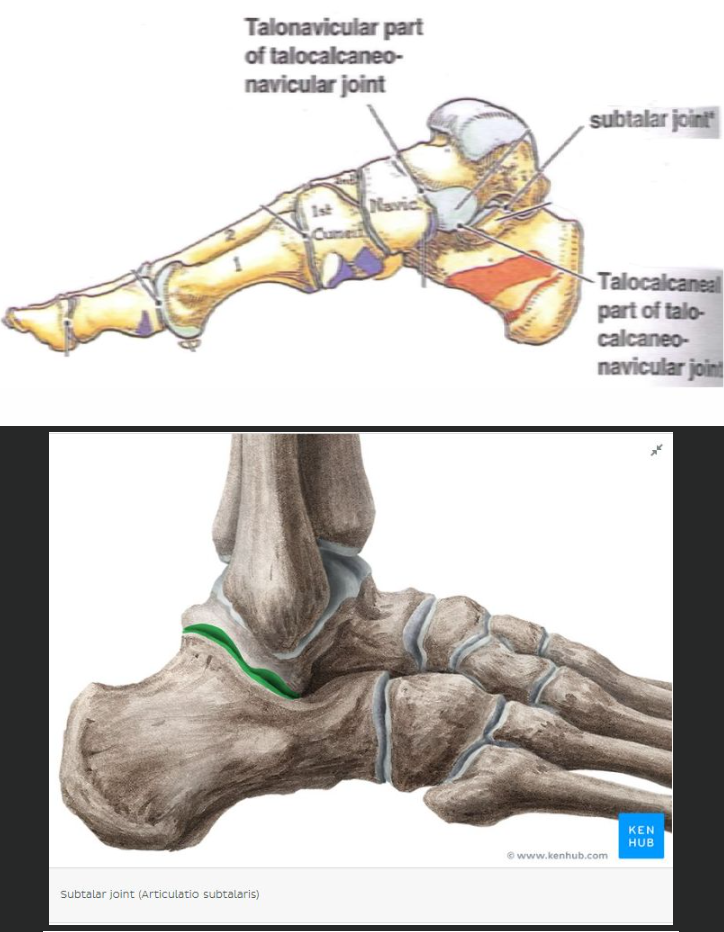2.6 Mikä seuraavista rakenteista on tibialis posterior jänne?
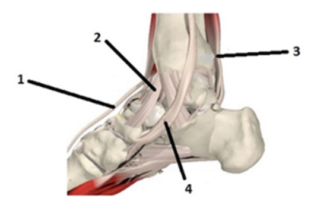
Valitse yksi:
- 2
- 3
- 1
- 4
Solution.
d1 = Extensor hallucis longus
2 = Tibialis anterior
3 = Akillesjänne2.7 Hamstring repeämät
Valitse yksi:
- Leikkaushoidon tulokset ovat epävarmat, jos kyseessä on jänteiden repeytyminen irti insertiosta (Gradus III vammat)
- MRI on aina tarpeellinen diagnostiikassa
- Tavataan käytännössä vain urheilijoilla
- Täydellinen repeämä (Gradus III vamma) voi syntyä keski-iässä liukastumistapaturman yhteydessä
- Etureiden hematooma on usein avuksi diagnostiikassa
Solution.
da: Leikkaushoito on ensisijainen hoito repeämissä (yleensä tehdään kiireellisesti MRI ja jos totaaliruptuura + vetäymä 2cm -> operatiivisen hoidon harkinta). Operatiivisessa hoidossa tehdään ankkurikiinnitys takaisin repeämiskohtaan eli yleensä istuinkyhmyyn.
b: MRI ei ole aina tarpeen diagnostiikassa ja diagnoosi voidaan asettaa kliinisellä tutkimuksella (polven fleksio kivulias/ei onnistu/heikompi vastustettuna, hematooma pakaran alla, voi palpoitua kuoppa) ja anamneesilla (tyypillisesti taustalla voimakas lonkan koukistusliike, esim. liukastuminen spagaattiin). MRI:llä voidaan tarkistaa repeämän vetäymä ja sen perusteella päättää operatiivisesta hoidosta (tehdään lähete kirurgiseen yksikköön päivystyslähetteellä seuraavana arkipäivänä, jos todetaan perusterveydenhuollossa hamstrings-repeämä)
c: Tavataan usein keski-ikäisillä, jotka liukastuvat spagaattiasentoon esim. talvella.
e: Hematooma tyypillisesti muodostuu pakaran alle. Tämän puuttuminen ei tosin poissulje repeämää (tulee usein pintaan vasta parin päivän viiveellä)
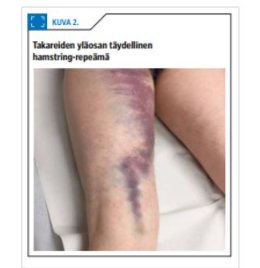
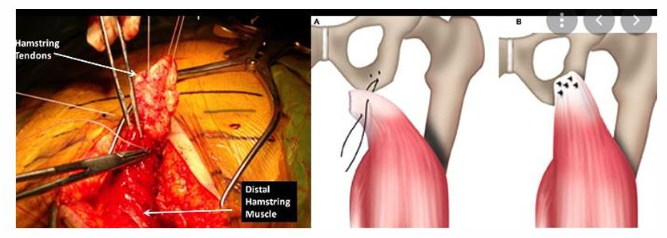2.8 Mitä kuvassa testataan (potilas makuulla vatsallaan)?
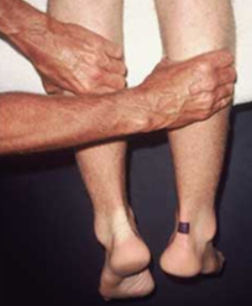
Valitse yksi:
- Aitiopaineoireyhtymää
- Akillesjänteen repeämää
- Suralishermon toimintaa
- Hamstring-repeämää
Solution.
bKyseessä on Thompsonin testi. Siinä puristetaan pohjetta ja jos tämä ei aiheuta nilkan plantaarifleksiota, testi on positiivinen eli akillesjänne on revennyt
a: Aitiopaineoireyhtymä = kohonnut kudospaine faskian rajoittamassa lihasaitiossa ylittää perfuusiopaineen, mikä johtaa laskimoiden ulosvirtausobstruktioon ja arteriolien kollapsiin. Johtaa anoksiaan, joka voi johtaa jo alle kuudessa tunnissa pysyvään kudosvaurioon tai -kuolioon. Taustalla voi esim. olla luunmurtuma, joka johtaa turvotukseen lihasaitioissa. Diagnosoidaan pääasiassa kliinisesti (6P eli Pallor, Pain out of proportion, Paresthesias, Pulselessness, Poikilothermia (lämmönsäätelyn epäonnistuminen), Paralysis (myöhäinen löydös); usein myös mukana Pinkeys). Apuna voidaan periaatteessa myös käyttää aitiopainemittaria, jossa oireyhtymän raja-arvoksi ajatellaan olevan 30 mmHg paine-ero diastolisen verenpaineen ja aitiopaineen välillä.
c: N. suralis (L4-S1) on puhtaasti kutaaninen hermo posterolateraalisessa sääressä ja lateraalisessa nilkassa. Sitä voidaan testata sivelemällä jalan sivusyrjää.
d: Hamstring ruptuurassa voidaan testata polven fleksiota (kivulias/ei onnistu/heikompi kuin normaalisti). Samoin lonkan ekstensio on häriintynyt. Voidaan myös palpoida lihasten kiinnittymiskohtaa istuinkyhmyyn ja tuntea tässä revenneen jänteen kohdalla kuoppa.
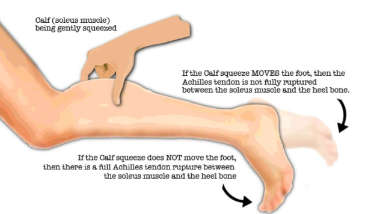2.9 Eturistisiteen repeämä
Valitse yksi:
- Vammaan liittyy usein MRI-kuvissa näkyvä kantavan nivelpinnan rustovaurio ja luukontuusio
- On useimmiten yksittäinen vamma eikä kuulu ns. ”unhappy triad” vammaan
- ACL on kestävä ligamentti, joten sen repeämä vaatii aina kontaktin toisen pelaajan kanssa joukkuepelilajeissa
- Vamman jälkeisenä päivänä punktiossa saadaan tyypillisesti runsaasti nivelnestettä
Solution.
ab: Usein vammautuu toisten nivelsiteiden tai nivelkierukan kanssa; unhappy triad = ACL-vamma+MCL-vamma+kierukkavamma
c: Syntyy tyypillisesti valgisoivan kiertovääntövamman seurauksena; ei siis tarvitse suoraa kontaktia
d: Vammassa saadaan tyypillisesti verta punktoitua; ACL-repeämä on yleisin veripolven aiheuttaja aikuisilla2.10 Supraspinatuksen toimintaa voi testata
Valitse yksi:
- Pitotestillä kyynärpää 90° kulmassa vaakatasossa
- Vastustetulla abduktiolla pikkurilli ylöspäin hiukan vaakatason alapuolella
- Vastustetulla etuelevaatiolla
- Pyytämällä potilasta viemään käsi selän taakse ja irrottamaan käsi ihosta
Solution.
bKyseessä on Joben (Empty can) testi. Potilas tuo yläraajat 90 asteen loitonnukseen ja siitä noin 30 astetta eteenpäin niin, että raajat ovat lapaluun suuntaisesti. Raajat kierretään sisäänpäin, kunnes peukalot osoittavat lattiaa kohti. Tutkija painaa käsiä alaspäin potilaan vastustaessa liikettä. Voimaheikkous viittaa supraspinatuksen repeämään.
Supraspinatus voidaan testata myös drop arm -testillä. Tutkija nostaa potilaan yläraajan passiivisesti maksimaaliseen loitonnukseen. Otteen päästäessään tutkija pyytää potilasta laskemaan yläraajan hitaasti. Kyvyttömyys suorittaa liike kontrolloidusti (yläraajan asento pettää tai “tippuu”) viittaa supraspinatusjänteen repeämään
a: Tässä on kyseessä hornblower-testi, joka testaa m. infraspinatusta ja m. teres minoria. Olkavarsi tuodaan 90 asteen loitonnukseen ja 90 asteen ulkokiertoon. Potilasta pyydetään pitämään tämä asento. Jos tähän asentoon tuominen tai siinä pysyminen ei onnistu, löydös viittaa infraspinatuksen ja teres minorin laajoihin repeämiin.
c: Testaa pääasiassa anteriorista deltoidia.
d: Tämä ns. lift off -test testaa m. subscapularista. Muita testejä on internal rotation lag- ja belly press-testit (lift off ehkä ensisijainen yleensä).
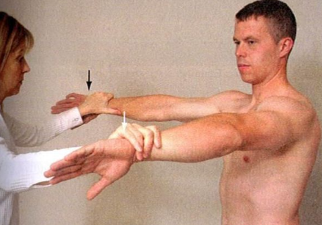2.11 Mikä seuraavista rakenteista on peroneus longus jänne?
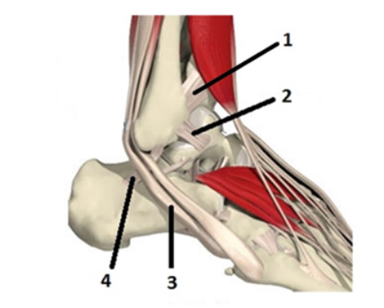
Valitse yksi:
- 4
- 3
- 2
- 1
Solution.
b1 = ligamentum tibiofibulare anterius (ATFL); osa syndesmoosia (Syndesmoosi viittaa distaaliseen tibiofibulaariseen niveleen, jota tukee 3-4 ligamenttia/ligamenttimaista kalvorakennetta: ligamentum tibiofibulare anterius (ATFL), ligamentum tibiofibulare posterius (PTFL), membrana interossea cruris (IOM) ja ligamentum tibiofibulare transversum (inferior transverse ligament of the tibiofibular syndesmosis), joka ei ole monissa anatomialähteissä)
2 = lig. talofibulare anterius (FTA)
4 = lig. calcaneofibulare (FC-ligamentti)
2.12 Mistä murtumasta on todennäköisimmin kyse?
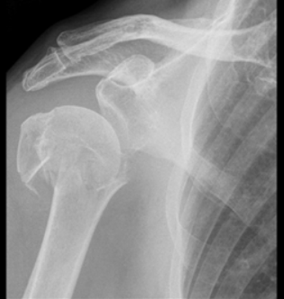
Valitse yksi:
- Neer yhden fragmentin murtumasta
- Kaikki muut vastausvaihtoehdot ovat väärin
- Isoloidusta tuberculum majus murtumasta
- Neer kolmen fragmentin murtumasta
Solution.
d
Tuberculum majus on dislokoitunut >5mm (usein käytetään >5mm Neerin luokituksessa dislokoitumisrajana tuberculum majuksen suhteen; muut 1cm ja/tai >45 astetta angulaatiota). On myös murtumalinja kirurgisessa kaulassa ja se on dislokoitunut suhteessa varteen. On siis todettavissa kolme erillistä fragmenttia (tuberculum majus, caput ja varsi).
Neerin luokitus perustuu proksimaalisen humeruksen jakamiseen neljään osaan kasvunaikaisten luutumiskeskusten mukaan: nivelpinta (caput humeri), iso olkakyhmy (tuberculum majus), pieni olkakyhmy (tuberculum minus), olkavarsi (brachium). Murtumat usein noudattavat näiden välisiä linjoja. Murtumasegmentti luokitellaan kappaleeksi, jos se on dislokoitunut yli 1cm tai anguloitunut yli 45° (tuberculum majuksen suhteen usein dislokaatiorajana käytetään >5mm).
Yksiosainen proksimaalisen humeruksen murtuma tarkoittaa, että murtumakappaleiden välillä ei ole Neer’n luokituksen vaatimaa dislokaatiota tai angulaatiota. Ihan sama kuinka monta murtumalinjaa on, jos mikään murtumasegmenteistä ei täytä näitä kriteereitä -> on yksiosainen murtuma.
Yleisin Neer’n luokituksen mukainen proksimaalisen humeruksen murtuma on kaksiosainen murtuma, jossa murtumalinja on kirurgisessa kaulassa.
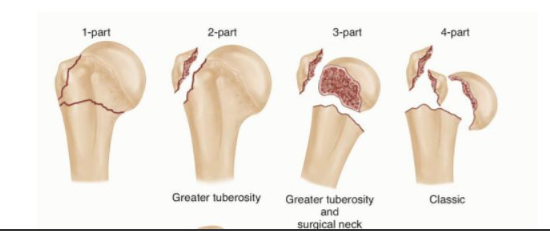2.13 Mikä murtuma?
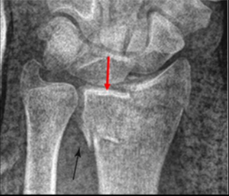 Valitse yksi:
- Dorsaalinen Barton
- Smith
- Volaarinen Barton
- Die punch
Solution.
dDie punch-murtuma tarkoittaa värttinäluun alaosan puolikuuluuta (lunatum) vastaavan nivelpinnan murtumaa, jossa värttinäluun nivelpinta painuu proksimaalisuuntaan. Aksiaalinen voima aiheuttaa radiuksen vastinnivelpintaan kompressiomurtuman ja nivelpinnan painumisen. Konservatiivisella hoidolla murtuma ei yleensä reponoidu. Mikäli nivelpinnan painauma on yli 1‒2 mm, tulee se kohottaa operatiivisesti.
Tässä kuva muista distaalisista radiusmurtumista. Tyyppimurtuma Collesin murtuma eli dorsaalisesti dislokoitunut distaalinen radiusmurtuma.
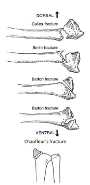2.14 Tyypillisen radiusmurtuman käypähoito suositus
Valitse yksi:
- Värttinäluun alaosan murtumasta toipuminen kestää 3-4 kk, jolloin voidaan arvioida lopputulos
- Leikkaushoitoa suositellaan yli 65-vuotiaille, jos asento huononee kipsihoidon yhteydessä hyväksyttyjen raja-arvojen ulkopuolelle
- Murtumien ensisijainen hoitopaikka on erikoissairaanhoito
- Kipsihoito voidaan toteuttaa funktioasentoisella kipsilasta (ei volaarifleksiota, pronaatiota eikä ulnaarideviaatiota)
Solution.
da: Lopullinen paraneminen voi kestää 6–12 kk. Valtaosalle ei jää päivittäistä pysyvää haittaa, mutta osalle potilaista voi jäädä ranteen oireita riippumatta siitä, millä menetelmällä murtuma on hoidettu . Jos distaalisen radiusmurtuman 5vkon kontrollissa todetaan rtg:ssa pientä virheasentoa, niin tyypillisesti voidaan mobilisoidaan normaaliin tapaan ja annetaan luutua. Jos selvä toiminnallinen haitta kuntoutuksen jälkeen jää, voidaan tehdä korjausleikkaus aikaisintaan 6kk kohdalla.
b: Näin kirjoitetaan hoito-ohjeissa: “Yli 65-vuotiaalla radiologinen löydös ei ennusta toiminnallista lopputulosta eikä kirurgisesta hoidosta todennäköisesti ole hyötyä, vaikkei murtuman asento olisi hyväksyttävä tai se heikkenisi kipsihoidon aikana hyväksyttävien raja-arvojen ulkopuolelle. Kirurgista hoitoa voidaan harkita myös aktiivisilla ikääntyvillä, joilla on suuret vaatimukset yläraajan toimintakyvyn suhteen. Sen tarve tulee harkita näillä potilailla huolellisesti ja tapauskohtaisesti”
c: Distaalisen radiuksen tyyppimurtumat voidaan hoitaa ensisijaisesti konservatiivisesti PTH:ssa. Tosin jos esim. reponoinnilla ei saada <65-vuotiaalle hyväksyttävää asentoa, niin operatiivinen hoito ESH:ssa.
Ranteen tyyppimurtuman kipsihoito juuri on d-kohdassa kuvailtu funktioasentoinen dorsaalinen kipsilasta, jossa 0-20 asteen ekstensio, eikä muuta vääntelyä käden asennon suhteen (aikaisemmin käytettyä voimakasta ulnaarideviaatiota tulee välttää).
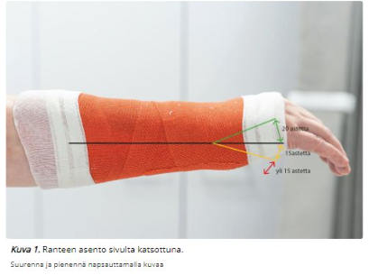2.15 Kuvan nilkassa
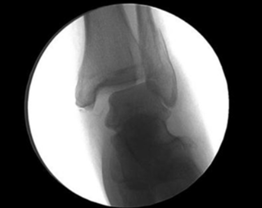
Valitse yksi:
- Talus siirtynyt lateraalisesti
- Kaikki vastausvaihtoehdot ovat oikein
- Mediaalinen nivelrako on levinnyt
- Lateraalimalleolissa murtuma
Solution.
bTaluksen lateralisaatio ja mediaalisen nivelraon leventyminen viittaavat instabiiliin nilkkamurtumaan (nivelhaarukka ei ole kongruentti). Kyseessä vaikuttaa olevan weber B-murtuma (syndesmoosin/nivelraon tason fibulamurtuma), jonka yhteydessä on deltaligamenttivaurio, joka mahdollistaa taluksen lateralisaation. Instabiilin nilkkamurtuman hoito on operatiivinen.
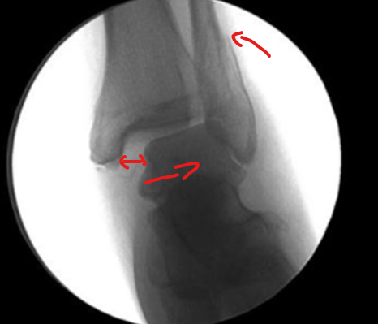2.16 Lonkkamurtuma
Valitse yksi:
- Avaskulaarisen nekroosin riski on suurempi pertrokanteerisissa murtumissa kuin reisiluun kaulan murtumissa
- Yleisin murtumatyyppi on subtrokanteerinen murtuma
- On tärkeää leikata mahdollisimman pian (1-2 vrk sisällä vammasta), koska sillä on vaikutus potilaan ennusteeseen
- Riski saada lonkkamurtuma on hoitokodissa asuvilla pienempi kuin muulla samanikäisellä väestöllä
Solution.
ca: Trokanteeriset murtumat eivät vaurioita circumflex-arterioita samalla tavallakuin kaulan murtumat. Ne ovat reisiluun kaulan murtumiin verrattuna paremman verenkierron alueella ja luutuvat siten hyvin. Proksimaalisista reisiluun murtumista collum-murtumat ovat siis riskialttiita avaskulaarisen nekroosin suhteen (erityisesti subkapitaaliset murtumat)
b: Yleisin murtumatyyppi on kaulan murtuma (n. 60%), toiseksi yleisin on trokanteerinen eli pertrokanteerinen(n. 30%); subtrokanteeriset ovat harvinaisimpia.
c: Totta; lonkkamurtumat leikataan tyypillisesti päivän sisällä, jotta potilas saadaan liikkeelle mahdollisimman nopeasti eikä jää sänkyyn tekemään kuolemaa.
d: Hoitokodeissa lonkkamurtumat ovat yleisiä, koska potilaat ovat usein hyvin heiveröisiä ja kaatumiset aiheuttavat lonkkamurtumia helposti.
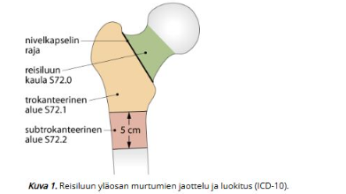
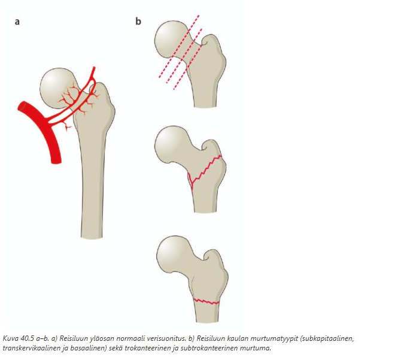2.17 Olkanivelen sijoiltaanmeno
Valitse yksi:
- Reposition jälkeen voimakasta ulkokiertoa on syytä välttää 6 viikon ajan
- Liitännäisvammana on lähes aina leikkaushoitoa vaativa kiertäjäkalvosimen repeämä
- Caput humeri luksoituu yleensä taaksepäin
- Sijoiltaanmenon yhteydessä yleisimmin vaurioituva hermo on nervus radialis
Solution.
a (tosin ei ehkä enää) Vielä 2020 (kysymyksen tekovuosi) oli tapana vältellä ulkokiertoa 6 viikon ajan olkanivelen luksaation reposition jälkeen. Nykyään näin pitkää rajoitusta ei ilmeisesti enää ole (ainakin muistan opettajan näin sanoneen joskus). Ohje kuitenkin löytyy vielä Terveysportista olkanivelen sijoiltaanmeno -artikkelista.
b: Kiertäjäkalvosimen repeämä ei ole “lähes aina”-juttu – sitä esiintyy erityisesti vanhemmilla potilailla, mutta ei useimmissa tapauksissa
c: Caput humeri luksoituu lähes aina eteenpäin, ei taaksepäin (posteriorinen luksaatio on harvinainen ja pelkkä inferiorinen luksaatio (luxatio erecta, käsi jää pakkoasentoon ylös) vielä harvinaisempi)
d: Yleisimmin vaurioituva hermo on n. axillaris, ei n. radialis2.18 Subtrokanteerinen lonkkamurtuma
Valitse yksi:
- Johtaa usein päävaltimoiden (a.femoralis profunda) vaurioitumiseen
- Tämän murtuman ydinnaulaus johtaa usein rasvaemboliaan
- Korkeaenerginen, tyypillisesti pirstaleinen murtuma, joka vaatii yleensä avointa reduktiota ja levytystä
- Vanhuksilla kliiniseen kuvaan kuuluu raajan lyhentyminen, ulkorotaatio, paikallinen turvotus ja hypovolemiariski
Solution.
dJalan ulkorotaatio ja lyhentyminen on lonkkamurtumien tyypillinen virheasento. Jos tämän näkee päivystyksessä, niin hoito on yleensä helppoa: kipulääkitys ja soita ortopedille; lonkka leikataan tyypillisesti vuorokauden sisällä.
a: A. femoralis profunda -vaurio on harvinainen
b: Rasvaembolia voi esiintyä missä tahansa pitkien luiden murtumassa, mutta ei erityisesti juuri subtrokanteerisessa, eikä ydinnaulaus johda “usein” siihen
c: Subtrokanteerinen murtuma hoidetaan yleensä ydinnaulauksella (gammanaula), ei levytyksellä.2.19 Luunmurtuman paraneminen
Valitse yksi:
- Pehmytosavauriot hidastavat luun paranemista
- Putkiluu paranee nopeammin kuin hohkaluu
- Murtumapäiden kompressio (kompressiolevytys) nopeuttaa luun paranemista
- Dislokoitumattomat nivelen sisäiset murtumat pyritään ensisijaisesti leikkaamaan hyvän lopputuloksen turvaamiseksi
Solution.
aJos pehmytkudokset ovat vaurioituneet (esim. avomurtuma, murskavamma), verenkierto häiriintyy ja paraneminen hidastuu
b: Hohkaluu paranee yleensä nopeammin. Hohkaluun hyvä verenkierto ja paikallisten mesenkymaalisten kantasolujen runsas määrä takaavat yleensä murtuman nopean paranemisen.
c: Kompressiolevytys ei nopeuta biologista paranemista, vaan parantaa mekaanista stabiilisuutta ja mahdollistaa suoran (contact) luutumisen. Suora luutuminen ei kuitenkaan ole epäsuoraa nopeampaa.
d: Dislokoitumattomat (paikoillaan pysyneet) nivelen sisäiset murtumat hoidetaan yleensä konservatiivisesti, ei leikkaamalla.2.20 Atyyppinen reisiluun murtuma
Valitse yksi:
- Tavataan nuorilla urheilijoilla rasitusmurtuman komplikaationa
- Kuvattu bisfosfonaattihoidon ja denosumabihoidon yhteydessä
- Myös oireettomaan murtumaan suositellaan profylaktista naulausta
- Matalaenergisissä vammoissa syntyvä osteoporoottinen murtuma
Solution.
bOsteoporoosiin bisfosfonaattihoitoa (tai denosumabihoitoa) saavilla potilailla esiintyy subtrokanteerisia tai diafyysialueen lateraalisia reisiluun rasitusmurtumia; kutsutaan atyyppiseksi reisiluun murtumaksi. Näihin liittyy huomattava murtumariski, joten murtuman tunnistaminen on tärkeää.
Murtuma näkyy röntgenkuvassa vain vähäisenä kortikaalisena kohoumana, ja magneettitutkimuksessakin hohkaluun turvotus on vähäisempää kuin tavallisen rasitusmurtuman aiheuttama turvotus
Muutos on usein molemminpuolinen, joten molempien puolien kuvaus on aiheellinen
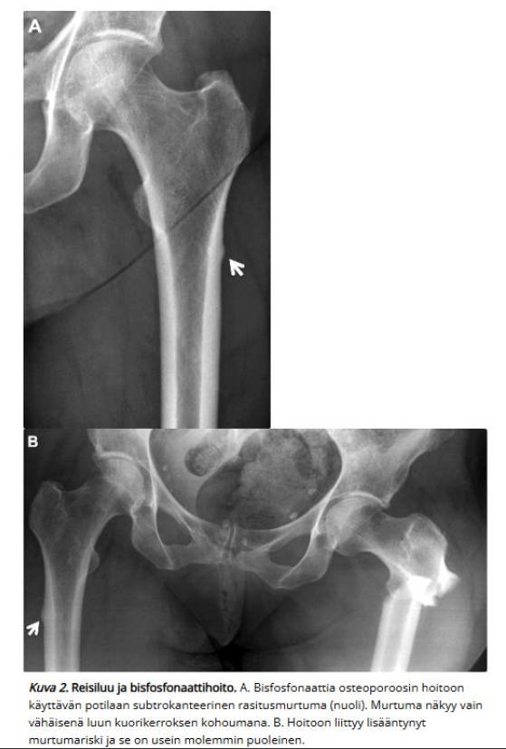2.21 Eturistisiteen repeämän hoito nuorilla ja keski-ikäisillä
Valitse yksi:
- Leikataan mahdollisimman nopeasti, jotta paraneminen pääsee heti alkuun
- Konservatiivisesti hoidettuna potilaalla on suurempi riski saada posttraumaattinen artroosi
- Leikkaus ei ole tarpeen, vaikka polvessa olisi muitakin ligamentti- ja kierukkavaurioita
- Voidaan hoitaa konservatiivisesti ja leikata tarvittaessa myöhemmin 3-6 kk kuluttua
Solution.
dHoito on suunniteltava yksilöllisesti. Alkuvaiheessa kaikille ACL-repeämäpotilaille ohjataan polven liike- ja lihasvoimaharjoitukset. Yksittäisen ACL-repeämän leikkauksellinen hoito on perusteltu, jos reisilihasten aktiivisesta kuntoutuksesta huolimatta polvessa vamman jälkeen on toistuvia muljahduksia tai pettämistuntemuksia. Leikkaushoitoa puoltaa myös fyysisesti raskas työ, liikunnallisesti aktiivinen elämäntapa ja urheiluharrastus, jossa tulee paljon kiihdytyksiä ja suunnanmuutoksia (esim. pallo- ja mailapelit sekä laskettelu). Yksittäisen eturistisiderepeämän rekonstruktioleikkauksella ei ole kiire, se voidaan suorittaa kuukausien kuluttua.
c: Eturistisiteen vaurioon liittyy noin puolessa tapauksista traumaattinen kierukkarepeämä. Nämä yhdistelmävammat hoidetaan pääsääntöisesti leikkauksellisesti rekonstruoimalla ACL jännesiirteellä ja ompelemalla kierukkarepeämä muutaman viikon sisällä tapaturmasta. Mikäli traumaattiseen kierukkarepeämään liittyy lukko-oiretta, on suositeltavaa suorittaa leikkaus kiireellisenä. Myös polven moninivelsidevammat (usein vaurioituu MCL:n kanssa) suositellaan hoidettavaksi leikkauksellisesti.2.22 Mikä seuraavista EI ole nilkan instabiilin (leikkaushoitoa vaativan) lateraalimalleolin murtuman merkki?
Valitse yksi:
- Mediaalinen nivelrako on levinnyt
- Lateraalimalleolin murtumassa on ≤ 2 mm sivuttaissiirtymä
- Nivelhaarukka on inkongruentti
- Kliinisessä kokeessa nilkassa on tunnettavissa sivuttaisliikettä
Solution.
b2.23 Olkapään apprehension testissä
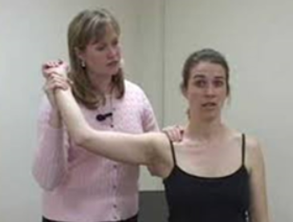
Valitse yksi:
- Napsahdus on positiivinen löydös
- Kaikki muut vastausvaihtoehdot ovat väärin
- Testataan instabiliteettia
- Humerus luksoituu posteriorisesti
Solution.
cOlkanivelen instabiliteettia epäiltäessä luotettavimmaksi on osoittautunut havahtumistesti (apprehension-koe).
Testin voi suorittaa istuen tai maaten olkapää tutkimuspöydän reunalla (maaten yleensä parempi). Tutkija kääntää koukistettua kyynärvartta olkavarsi 90 asteen loitonnuksessa rauhallisesti uloskiertoon.
Havahtuminen (äkillinen nivelen hallinnan palauttaminen lihasjännityksellä) tai sijoiltaanmenon pelko viittaavat eteenpäin suuntautuvaan epävakauteen.
Pelkkä kipu testissä ilman muita oireita ei viittaa epävakauteen eikä ole “positiivinen havahtuminen”2.24 Dislokoitumaton patellan murtuma
Valitse yksi:
- Voidaan hoitaa 6 viikon immobilisaatiolla (kipsihylsy) sallien varaamisen raajalle 4 viikon kuluttua
- Konservatiiviseen hoitoon kuuluu tarvittaessa kivuliaan veripolven punktio ennen kipsausta
- Konservatiivisen hoidon tulos on kohtalainen
- Kannattaa leikata profylaktisesti dislokaatioriskin takia
Solution.
bVeripolvitilanteissa polvea ei tarvitse punktoida rutiinisti, mutta jos se aiheuttaa kipua pinkeyden takia, niin sen voi punktoida terapeuttisesti.
a: Patellamurtuman konservatiivinen hoito on ortoosi/kipsihylsi 3-4 viikkoa ja potilas saa alusta asti kävellessä varata raajaan, kun polvi on ojennettuna. Kons hoito mahdollista, jos polven ojennusvoima on säilynyt eikä lumpion nivelpinnassa ole pykälää tai diastaasia (esim. fissuraalinen poikkimurtuma).
c: Konservatiivinen hoito usein pettää (jos kyseessä poikittainen murtuma), joten c on väärä vastaus.
d: Lumpiomurtumia ei suorastaan profylaktisesti leikata (hyväasentoiset poikkimurtumat kuitenkin usein pettävät, joten rtg-kontrollointi on tärkeää).2.25 Tämä kulma on
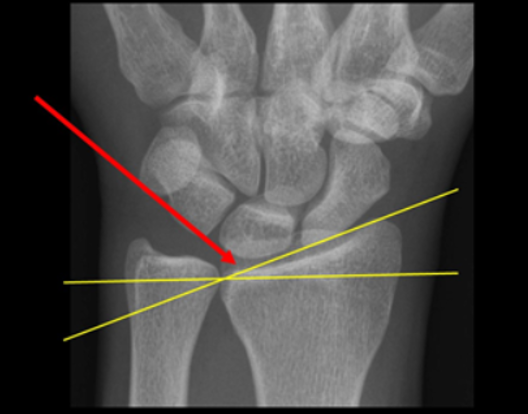
Valitse yksi:
- Volaarinen kallistuskulma
- Radiuksen inklinaatio
- Dorsaalinen kallistuskulma
- Radiuksen pituus
Solution.
bRadioulnaarinen kallistuskulma eli inklinaatiokulma
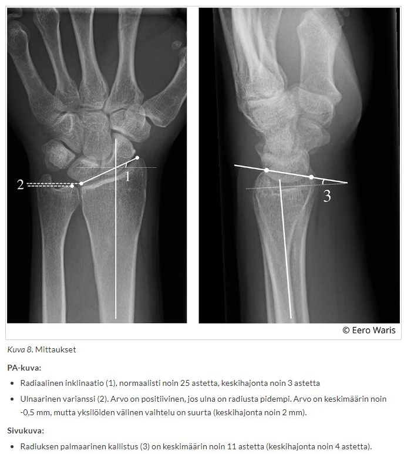

2.26 Solisluun keskikolmanneksen murtuman konservatiivinen hoito
Valitse yksi:
- 3 viikon kohdalla sallitaan elevaatio vaakatasoon ja 6 viikon jälkeen vapaa mobilisaatio kuormittamatta
- Kaikki vastausvaihtoehdot ovat oikein
- Kantoside 3 viikkoa
- Viikon kohdalla aloitetaan pendell-liikeharjoitukset
Solution.
bSolisluun keskikolmanneksen murtumien (yleisin lokaatio solisluumurtumalle) hoito on yleensä konservatiivinen. Operatiivinen harkinta, jos dislokaatio on yli solisluun paksuuden, eli luinen kontakti murtumakappaleiden välillä puuttuu, tai murtumassa on lyhentymää enemmän kuin 15–20 mm. Tietysti myös avomurtumat ja ne, joissa on hermo- tai verisuonivamma tai kelluva olkapää (solisluun ja lapaluun kaulan samanaikainen murtuma).
Lateraaliset murtumat leikataan herkemmin. Dislokoitumaton kons, mutta jos murtumaan liittyy korakoklavikulaaristen nivelsiteiden vamma, mediaalinen solisluun osa nousee ylös aiheuttaen AC-nivelen luksaation kaltaisen virheasennon -> Nämä potilaat kannattaa lähettää kirurgiseen yksikköön, jossa leikkausharkinta toteutetaan yksilöllisesti.2.27 Nilkkamurtuma
Valitse yksi:
- Weber C-tyypin murtumissa on yli 50%:sti syndesmoosin repeämä
- Jos lateraalimalleolin murtuman dislokaatio on alle 2 mm, ei leikkaushoito ole tarpeen, vaikka nivelhaarukka näyttäisi hieman leveältä
- Jos mediaalimalleolin murtuma ulottuu nivelen sisälle, on leikkaushoito välttämätön
- Lateraalimalleolin Weber A-tyypin murtumat voidaan hoitaa yleensä konservatiivisesti
Solution.
dTaitaa olla jotenkin wikissä väärä kysymyksenasettelu, sillä enemmänkin tässä on vain yksi väärä vastaus (b). Jos olisi pakko valita kuitenkin yksi oikea vastaus, niin se olisi d, koska se on yksiselitteisimmin oikea.
a: Weber C -murtumissa on lähes aina syndesmoosin vaurio (käytännössä siis yli 50%:sti on oikein, mutta hieman harhaanjohtava numero, jonka takia ajateltu vääräksi vastaukseksi)
b: On väärin, koska leikkaushoito on tarpeen, jos nivelhaarukka ei ole kongruentti (instabiili murtuma) jos se on leveä. Inkongruentti nivelhaarukka tarkoittaa instabiilia nilkkamurtumaa ja instabiilit nilkkamurtumat leikataan.
c: Jos on mediaalimalleolin murtuma, niin leikkaushoito on ensisijainen hoitokeino (ehkä ei ole täysin välttämätön, jonka takia ajateltu vääräksi vastaukseksi)2.28 Hauislihaksen jänteen irtoaminen distaalisesta insertiosta
Valitse yksi:
- Leikkaukseen liittyy vähän komplikaatioita
- Yleisin urheilijoilla, esimerkiksi painonnostajilla
- Yleisin ruumiillista työtä tekevillä yli 50 vuotiailla miehillä
- Kliininen diagnostiikka vaikeaa, usein sattumalöydös MRI-kuvauksessa
Solution.
ca: Hauislihaksen distaalipään jänteen repeämän ensisijainen hoito on operatiivinen. Tehdään tätä varten kiireellinen (1–7 vrk) lähete erikoissairaanhoitoon. Konservatiivista hoitoa voidaan käyttää, jos potilas hyväksyy voiman aleneman (koukistusvoiman (noin 30 %) ja supinaatiovoiman (noin 40–50 %) heikkeneminen) tai jos leikkaushoidolle on merkittäviä vasta-aiheita. Leikkaukseen liittyy komplikaatioita eikä voisi kuvailla, että siihen liittyy “vähän komplikaatioita”.
b: Hauisjänteen alaosan repeämien jakauma on kaksihuippuinen. Alle 30-vuotiailla miehillä yleensä suurienergiaisia urheiluvammoja. Yli 40-vuotiailla miehillä nostamiseen tai vääntämiseen liittyvä tapaturma tai ei-tapaturmainen voimankäyttö, kun kyynärpää on fleksiossa kyynärvarsi supinaatiossa. Yleisimmin repeämä tapahtuu >40-vuotiailla miehillä.
d: Kliininen diagnostiikka on suhteellisen helppoa. Hook-testi on sensitiivisin ja spesifisin testi diagnosoimaan vamma.
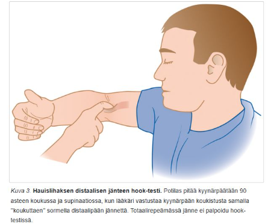2.29 Fractura radii typica: hyväksyttävä asento reposition jälkeen
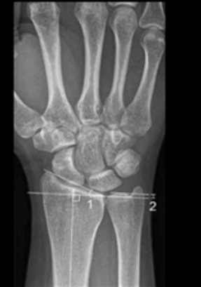
Valitse yksi:
- Lyhentyminen harvoin aiheuttaa toiminnallista haittaa työikäisillä
- Kipsi-immobilisaatio estää lyhentymisen syntymisen yli 65-vuotiailla osteoporoosipotilailla
- Lyhentyminen vaikuttaa distaalisen radioulnaarinivelen toimintaan
- Lyhentymistä ei voida riittävän tarkasti mitata röntgenkuvista
Solution.
ca ja c: Värttinäluun alaosan murtuman jälkeinen yli 3 mm:n lyhentymä saattaa huonontaa toiminnallista tulosta aiheuttamalla pitkittynyttä kipua, heikentämällä ranteen liikelaajuutta ja käden puristusvoimaa nuoremmilla ihmisillä, mutta yli 65-vuotiailla lyhentymällä ei ole selvää vaikutusta lopputulokseen.
b: Osteoporoottinen luu menee helposti kasaan, vaikka olisi kipsissä. Radiologinen instabiliteetti ja murtuman luutuminen niin sanottuun virheasentoon ei kuitenkaan tarkoita automaattisesti huonoa toiminnallista lopputulosta iäkkäiden kohdalla.
d: Lyhentyminen voidaan mitata rtg-kuvista. Se mitataan näin: (1) Piirrä viiva, joka on radiuksen pitkittäisakselin suuntainen (2) Etsi radiuksen midrefence-point (volaarisen ja dorsaalisen korteksin välipiste) ja piirrä siitä viiva, joka on kohtisuorassa radiuksen pitkittäisakseliin nähden (3) Etsi ulnan distaalipää ja piirrä siitä viiva, joka on kohtisuorassa radiuksen pitkittäisakseliin nähden (4) Mittaa etäisyys ulnan distaalipään ja radiuksen midreferencen välillä radiuksen pitkittäisakselin linjaa seuraten
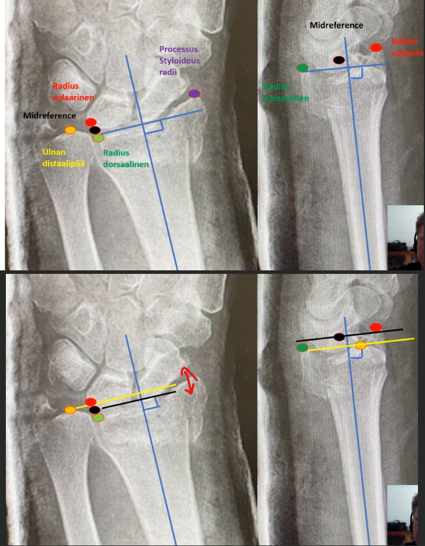2.30 Olkaluun yläosan murtuma
Valitse yksi:
- Stabiili lukkoruuvilevykiinnitys estää kaputnekroosin kehittymisen dislokoituneissa pirstaleisissa murtumissa
- Luksaatiomurtuma on usein ensiavussa helposti reponoitavissa
- Pirstaleisten murtumien hoidossa käytettävä käänteinen tekonivel ei vaadi toimivaa kiertäjäkalvosinta
- Murtumien ilmaantuvuus on laskussa
Solution.
cKäänteistekonivel ei salli suurta rasitusta, mutta se ei myöskään vaadi toimivaa kiertäjäkalvosinta. Erityisesti vanhusten luksaatiomurtumissa käänteistekonivel on suosittu (puolitekonivel nuoremmilla) ja osteosynteesi taas ensisijainen nuorien dislokoituneissa murtumissa.
a: Lukitusruuvilevy ei estä kaputnekroosia; se parantaa stabiilisuutta, mutta verenkiertohäiriö voi silti johtaa nekroosiin
b: Luksaatiomurtumat ovat vaikeita reponoida
d: Olkamurtumien ilmaantuvuus ei ole laskussa (nousussa väestön ikääntyessä)2.31 Patellamurtuma
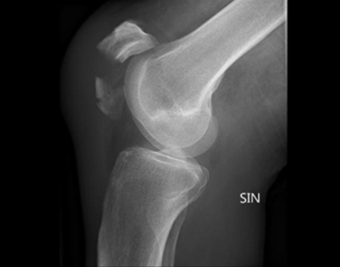
Valitse yksi:
- Hoidon kannalta nivelpinnan pykälällä ei ole merkitystä
- Dislokoitunut murtuma vaatii leikkaushoidon
- Tulee pyrkiä reponoimaan ensiavussa
- Liitännäisvammana on usein patellajänteen repeämä
Solution.
b a: Nivelpinnan pykälällä on merkitystä -> leikkaushoito on yleensä välttämätön
c: Dislokoituneen polvilumpion reponointi ei suorastaan vaikuta hoitovalintaan; alun perin dislokoitunut murtuma leikataan
d: Patellajänteen repeämä liitännäisvammana ei ole kovinkaan yleinen2.32 Mikä murtuma?
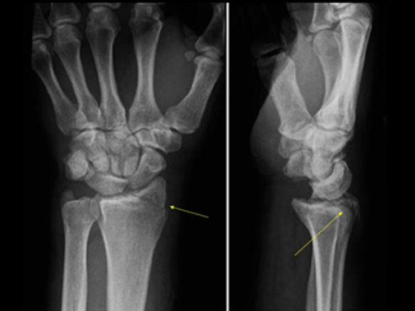
Valitse yksi:
- Die punch
- Volaarinen Barton
- Smith
- Dorsaalinen Barton
Solution.
d2.33 Tibialis posterior lihas
Valitse yksi:
- Hoitaa polven koukistusta
- Pitää yllä jalkaholvia
- Lihaksen jänne repeää usein nilkkamurtuman yhteydessä
- Hoitaa polven ojennusta
Solution.
bTibialis posteriorin päätehtäviä on tukea jalan pitkittäistä kaarta (jalkaholvia) sekä osallistua plantaarifleksioon ja invertointiin
c: Ei ole tyypillinen repeämä nilkkamurtuman yhteydessä
a ja d: Ei koukista tai suorista polvea
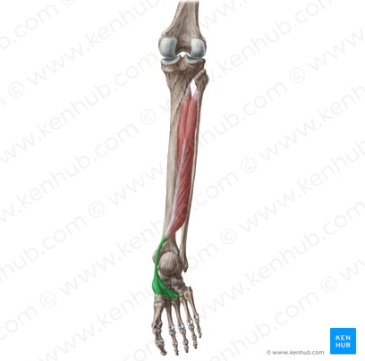2.34 Fractura radii typica: hyväksyttävä asento reposition jälkeen
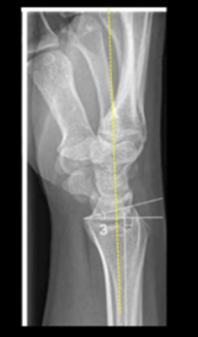
Valitse yksi:
- Radiuksen nivelpinta on normaalisti ≥ 20 asteen palmaarisesti kallistuneena
- Murtuman reposition jälkeen dorsaalinen kallistuminen pitäisi olla ≤ 5 astetta
- Murtuman reposition jälkeen dorsaalinen kallistuminen pitäisi olla ≤ 15 astetta
- Radiuksen nivelpinta on normaalisti kohtisuorassa pituusakselia vastaan
Solution.
c2.35 Mikä seuraavista rakenteista on quadricepsjänne?
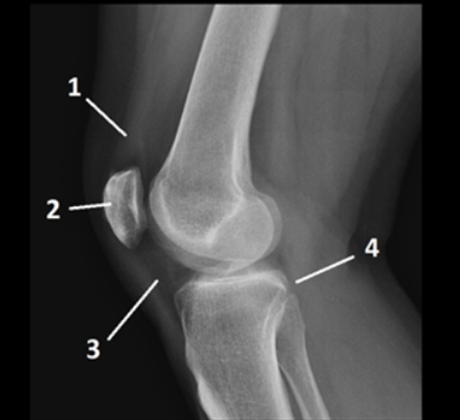
Valitse yksi:
- 3
- 1
- 2
- 4
Solution.
b2 = patella
3 = patellajänne
4 = m. semimembranosuksen bursa?2.36 Akromioklavikulaarinivelen (AC) luksaatio
Valitse yksi:
- Paras ja varmasti onnistunut lopputulos saadaan leikkaamalla
- Voidaan useimmiten hoitaa konservatiivisesti, vaikka solisluu olisi luksoitunut posteriorisesti (tyyppi IV)
- Jos solisluun pää nousee ylöspäin, pitää se leikata 2 viikon sisällä
- Tapahtuu usein kaatuessa tai törmätessä olkapää edellä esteeseen
Solution.
Sinänsä c ja d ovat molemmat oikein, mutta d on eniten oikein. a: Leikkaushoito ei aina tuota varmasti onnistunutta lopputulosta ja sitä ei myöskään käytetä lievempiasteisissa luksaatioissa (I-III). AC-nivelen täydellinen pysyvä sijoiltaanmeno (tyypit IV - VI) on yleensä tilanne, jossa leikkaushoidon ajatellaan kokemusperäisesti konservatiivista hoitoa hyödyllisemmäksi, vaikka kirjallisuudessa ei olekaan tästä näyttöä.
b: Useimmiten hoidetaan operatiivisesti, jos tyypin IV luksaatio
c: Jos solisluun pää on noussut yli luun paksuuden verran tai solisluussa on etu-takasuuntainen epävakaus, voidaan leikkaushoitoa harkita (luokat IV‒V)
d: AC-luksaatio voi syntyä joko suoran tai epäsuoran vamman seurauksena. Tavallisemmassa eli suorassa vammassa isku tulee yläraajan ollessa kiinni vartalossa hartian ylätakaosaan. Epäsuorassa vammassa isku tulee ojennetun, vartalossa kiinni olevan yläraajan kautta olkaniveleen ja olkaluun pää iskeytyy olkalisäkkeeseen sitä ylöspäin siirtäen. AC-luksaation tavallisin yksittäinen vammamekanismi on polkupyörällä kaatuminen, ja seuraavana tulevat urheiluun liittyvät vammat2.37 Haglundin deformiteetti
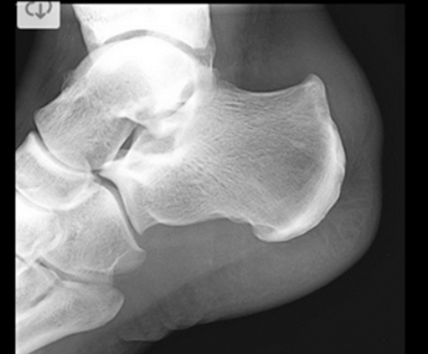
Valitse yksi:
- Kalkaneuksen luinen prominenssi
- Taluksen takaosan luinen prominenssi
- Yleisin syy akillesjänteen tendinoosiin
- Ei näy hyvin röntgenkuvassa, paljastuu tavallisesti MRI-kuvauksessa
Solution.
a. Voi esim. aiheuttaa kantapään kipua, varsinkin kun käyttää tiukkoja kenkiä.
b: Talus ei liity tähän deformiteettiin
c: Se ei ole suoraan yleisin syy akillesjänteen tendinoosiin (jänteen rappeumamuutos, joka usein johtuu toistuvasta rasituksesta), vaikka se voi siihen myötävaikuttaa
d: Näkyy hyvin röntgenkuvassa, koska on luinen prominenssi2.38 Smithin murtuma
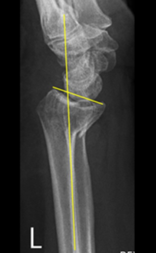
Valitse yksi:
- Reposition jälkeen kipsaus pehmustetulla kulmakipsilastalla ranne lievässä volaarifleksiossa ja pronaatiossa
- Distaalinen radiusmurtuma, jossa distaalifragmentti on dorsaalisesti kallistuneena
- Soveltuu hyvin konservatiiviseen hoitoon
- Leikkaushoito tarpeen useimmilla potilailla
Solution.
da: Rannemurtumat lastoitetaan funktioasentoon (lievä ekstensio ja muuten neutraaliasento). Smithin murtumassa lastoitus on volaarinen (vrt. Collesin murtuma, jossa dorsaalinen lasta)
b: Tämä olisi COllesin murtuma (tyyppimurtuma). Smithin murtumassa fragmentti on volaarisesti kallistunut.
c: Soveltuu konservatiiviseen hoitoon tietyissä tapauksissa, mutta usein vaatii leikkaushoidon.2.39 Tässä ranteessa on
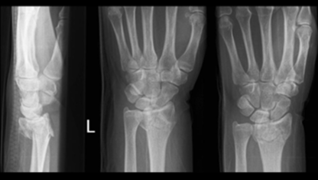
Valitse yksi:
- Bartonin murtuma
- Tyypillinen radiusmurtuma (Colles)
- Chaffeurin murtuma
- Smithin murtuma
Solution.
b2.40 Olkaluun yläosan murtuma
Valitse yksi:
- Konservatiivinen hoito johtaa usein huonoon toiminnalliseen lopputulokseen
- Yli 5 mm dislokaatio isoloidussa tuberculum majuksen murtumassa vaatii leikkaushoitoa
- Johtaa usein nopeasti (noin 1-2 kuukaudessa) rtg-kuvassa näkyvään kaputnekroosiin
- Yli 60% olkaluun yläosan murtumista on huonoasentoisia vaatien leikkaushoitoa
Solution.
bDislokoitumattoman tai lievästi dislokoituneen (< 5 mm) murtuman hoito on konservatiivinen. Raaja pidetään enintään 3 viikkoa mitellassa. ps. Muiden olkapään Neerin fragmenttien dislokoitumisrajana tyypillisesti pidetään 10mm
a: Konservatiivinen hoito johtaa useimmiten hyvään lopputulokseen niissä murtumissa, joissa se on indikoitu
c: Kaputnekroosi on harvinainen ja liittyy pääasiassa monilohkomurtumiin (esim. 3–4 osainen murtuma) ja murtumaluksaatioihin, ei yksittäiseen tuberculum majuksen murtumaan
d: lähteestä riippuen n. 70-80% olkaluun yläosan murtumista on hyväasentoisia murtumia2.41 Avomurtumat
Valitse yksi:
- Gradus IIIB: kirurgista korjausta vaativa verisuonivamma
- Gradus IIIC: traumaattinen amputaatio
- Gradus IIIA: Laaja iho- ja lihaskudosvamma, joka vaatii lihaskielekkeen
- Gradus I vamma: terävä luufragmentti perforoi ihon sisältä ulospäin
Solution.
da: Avomurtuman yhteydessä korjausta vaativa verisuonivamma = Gustilo-Andersonin luokka IIIc (IIIb = vaatii kielekerekonstruktion)
b: Gradus IIIC: korjausta vaativa verisuonivamma (Gustilo-Andersonin luokitus ei kuvaile amputaatiovammoja)
c: Gradus IIIa: laaja pehmytkudosvaurio, mutta se ei vaadi kielekerekonstruktiota
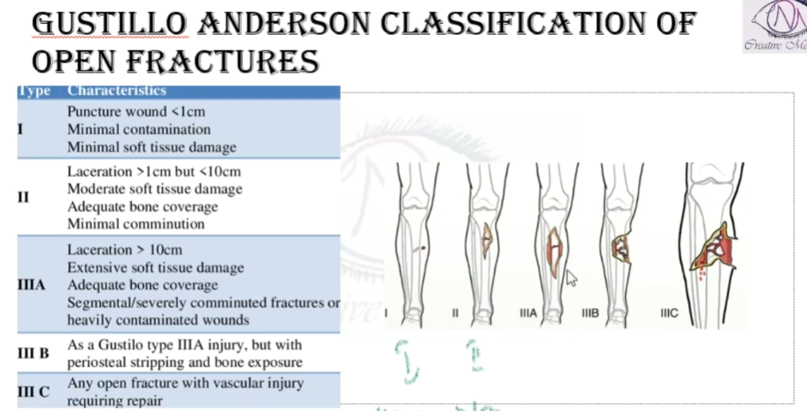2.42 Polven ojentajamekanismiin kuuluvat
Valitse yksi:
- Tuberositas tibiae, patellajänne, patella, quadricepsjänne ja -lihas
- Posterolateraalinurkka ja takakapseli
- ACL, PCL ja mediaalimeniski
- Quadricepsjänne, LCL ja patella
Solution.
aTuberositas tibiae tarkoittaa luista kohoumaa tibian proksimaaliosassa, johon patellajänne kiinnittyy.
Tässä on kuva ekstensoriapparaatista. Jos joku osa on revennyt, niin polven ojennus ei oikein onnistu.
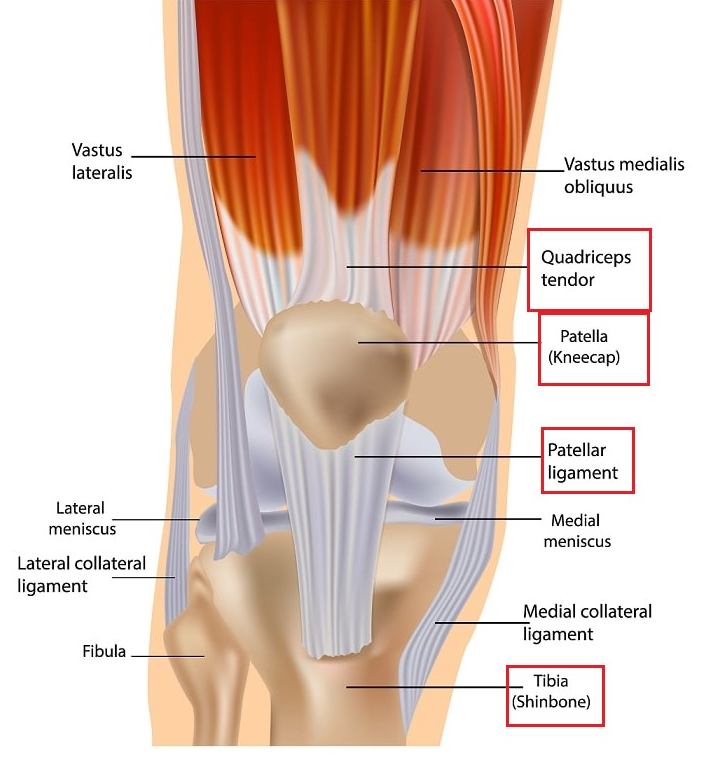2.43 Katkennut akillesjänne
Valitse yksi:
- Voidaan yleensä hoitaa konservatiivisesti
- Kaikki vastausvaihtoehdot ovat oikein
- Joka 3. potilaalla esioireita ja diagnoosi viivästyy joka 4. potilaalla
- Yleensä poikki 3-4 cm kantaluuinsertion yläpuolelta
Solution.
ba: Akillesjänteen repeämien hoidossa suositaan konservatiivista hoitoa, koska ortoosilla toteutetulla hoidolla saavutetaan käytännössä sama paranemistulos kuin operatiivisella hoidolla
b: Potilailla löytyy akillesjänteestä lähes aina degeneratiivisia muutoksia, mutta 2/3:ssa tapauksista katkeaminen tapahtuu ilman minkäänlaisia edeltäviä oireita. Diagnostiikassa petollista on se, että usein vähäinen nilkan ekstensio-fleksioliike jää kuormittamattomana jäljelle -> diagnoosi viivästyy.
d: Tyypillisesti poikkeaa ns. akilleksen watershed-alueelta, jossa verenkierto on heikointa. Tämä sattuu olemaan n. 2-6cm insertiokohdan yläpuolella (lähteestä riippuen senttimäärät hieman vaihtelevat)2.44 Olkaluun yläosan murtuman konservatiivinen hoito
Valitse yksi:
- Yläraaja tuetaan 2-3 viikoksi kantositeeseen ja kevyet heiluriliikkeet aloitetaan viikon sisällä
- Aktiiviset kiertoliike ja abduktioharjoitukset aloitetaan 3-5 viikon jälkeen
- Kaikki vastausvaihtoehdot ovat oikein
- Tavallisin komplikaatio on olkanivelen kipu ja jäykistyminen
Solution.
c2.45 Kuinka kuvan vamma tulisi ensisijaisesti hoitaa?

Valitse yksi:
- Repositio ja kantoside
- Repositio ja kulmakipsi
- Repositio ja vapaa mobilisaatio
- Leikkaus
Solution.
a ja bKyynärnivelluksaation primaarihoito tutkimuksen jälkeen on suljettu paikalleenasettaminen. Kyynärnivelen tulisi reposition jälkeen pysyä paikallaan ojennus-koukistussuunnassa sektorilla 60‒130 astetta, jotta konservatiivisella hoidolla on edellytykset onnistua. Jos stabiili testatessa, niin jatkoon kantoside tai kulmakipsi/ortoosi 2-3 viikkoa (molemmat löytyvät vaihtoehtoina eri lähteistä). Radiologinen seuranta 1vk.
Operatiivisen hoidon indikaatioita ovat repositionjälkeinen instabiliteetti fleksio-ekstensiosuunnassa, intra-artikulaarinen murtumafragmentti, avoluksaatio tai uusintaluksaatio konservatiivisessa hoidossa.2.46 Syndesmoosin tehtävä on
Valitse yksi:
- Tarjota verenkierto fibulan distaaliosaan ja tibian mediaaliosiin
- Kiinnittää talus TC-niveleen
- Stabiloida säären yläosa ja mahdollistaa polven optimaalinen liikerata
- Pitää tibia ja fibula toiminnallisesti yhdessä, jotta nilkkahaarukka pysyy kongruenttina fysiologisen kuormituksen aikana
Solution.
dSyndesmoosi viittaa distaaliseen tibiofibulaariseen niveleen, jota tukee 3-4 ligamenttia/ligamenttimaista kalvorakennetta: ligamentum tibiofibulare anterius (ATFL), ligamentum tibiofibulare posterius (PTFL), membrana interossea cruris (IOM) ja ligamentum tibiofibulare transversum (inferior transverse ligament of the tibiofibular syndesmosis), jota ei ole monissa anatomialähteissä.
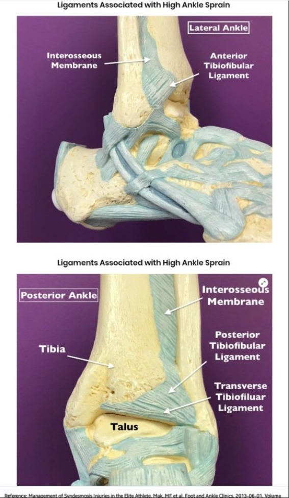2.47 Quadricepsjänteen repeämä
Valitse yksi:
- Aiheuttaa liikeheikkouden polven koukistukseen potilaan ollessa vatsamakuulla
- Johtuu yleensä suorasta iskusta polven seutuun
- Voidaan yleensä hoitaa konservatiivisesti
- Tuntuu usein palpoituvana kuoppana polvilumpion proksimaalipuolella ja potilas ei pysty nostamaan raajaa ojennettuna
Solution.
dQuadsit ovat polven ojentajia ja lonkan fleksoijia -> vauriossa ei onnistu polven koukistus tai raajan nostaminen. Raajan nosto saattaa kuitenkin välillä onnistua, mutta silloinkin hankalasti. Quadricepsjänne kiinnittyy polvilumpioon sen yläpuolelta ja repeämässä on siis kuoppa patellan yläpuolella.
a: Aiheuttaa liikeheikkouden polven ekstensioon
b: Johtuu yleensä epäsuorasta vammasta (vrt. patellajänteen repeämä, joka useammin suorasta iskusta). Aiheuttaja on yleensä pieni vammaenergia liukastumisen tai portaissa kaatumisen yhteydessä; voi myös tapahtua mm. kehonrakentajilla painavan kyykyn yhteydessä. Mekanismina siis nelipäisen reisilihaksen eksentrinen supistuminen polven ollessa koukistettuna.
c: Hoidetaan ensisijaisesti operatiivisesti. Jänne ommellaan takaisin patellaan. Vanhojen repeämien kohdalla voidaan käyttää vapaata jännesiirrettä (esim. semitendinosus- tai gracilisjänne) kiinnityksen vahvistamiseen.
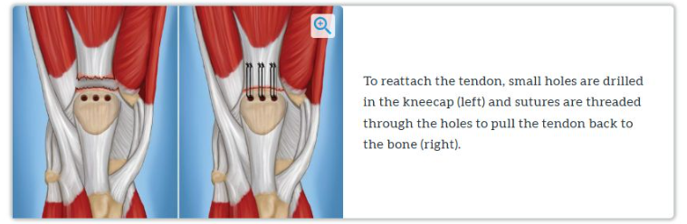2.48 Mikä seuraavista rakenteista on processus coracoideus?
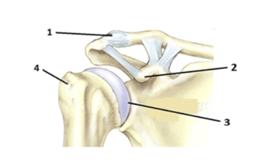
Valitse yksi:
- 1
- 2
- 4
- 3
Solution.
b1 = art. acromioclavicularis (AC-nivel)
3 = caput humeri
4 = tuberculum majus2.49 Hamstring jännerepeämä
Valitse yksi:
- Testataan vastustetulla lonkan fleksiolla
- Kaikki muut vastausvaihtoehdot ovat väärin
- Aiheutuu vammautuneen alaraajan voimakkaasta lonkan ekstensiosta
- Totaaliruptuura hoidetaan useimmiten konservatiivisesti
Solution.
ba: Hamstringit eivät suorita lonkan fleksiota, vaan lonkan ekstensiota ja polven koukistusta.
c: Aiheutuu vammautuneen alaraajan voimakkaasta lonkan fleksiosta (esim. liukastuminen spagaattiin)
d: Totaaliruptuura hoidetaan useimmiten leikkauksellisesti. Irronnut lihasryhmä istutetaan takaisin irtoamakohtaansa (istuinkyhmy) yleensä ankkurikiinnitteisin langoin. Hoito olisi hyvä toteuttaa ensimmäisten viikkojen aikana (kuukauden sisällä), sillä lihaksen lyhentymä voi estää myöhäisvaiheessa jänteen palauttamisen paikalleen ja vaurion aiheuttama kiinnikkeisyys ympäristöön, erityisesti iskiashermoon tai sen haaroihin, tekee myöhäisvaiheen leikkauksesta merkittävästi haastavampaa ja riskialttiimpaa